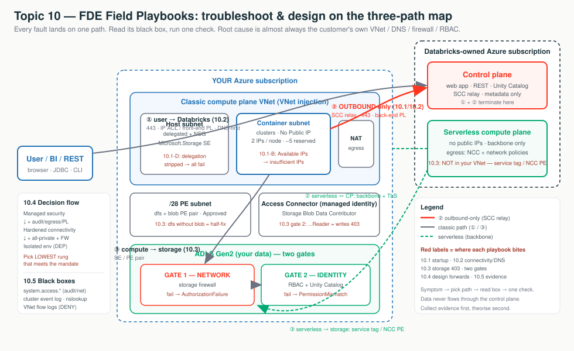

Stages 1–9 taught how VNet injection, SCC, Private Link, NCC, DEP and Unity Catalog storage access work. Stage 10 turns that into runbooks (symptom → first check → root cause → fix), the decision flow for picking a deployment pattern, and the diagnostics & escalation discipline that resolves a case on round-trip one.
You are an air-crash investigator standing on the three-path map. Every fault lands on
exactly one path — ① user → Databricks, ② compute ↔ control plane, ③ compute →
storage. So: (1) which path is failing? (the symptom tells you), (2) read
that path's black box (termination reason, nslookup, storage error, flow-log
DENY), (3) run ONE check, not ten — backwards from the message, not forwards
from the architecture. Design (10.4) is the same map run forwards; diagnostics (10.5) is it turned into
evidence — collect first, theorise second.
| Subtopic | Path | Tell-tale symptom | First check |
|---|---|---|---|
| 10.1 Startup | ② + plumbing | "Cluster won't start" / terminated with a reason | Read termination reason → quota / Available-IPs / NSG-UDR / delegation |
| 10.2 Connectivity | ① + ② | "Can't log in" / "login spins" / "Control Plane Request Failure" | nslookup from the failing network |
| 10.3 Storage/Serverless | ③ | "403 reading ADLS" / "serverless can't reach storage" | Error string → network vs identity gate; classic vs serverless |
| 10.4 Decision flow | all (design) | "Which architecture for us?" | Ask the four mandate questions → name the rung |
| 10.5 Diagnostics | all (evidence) | "Prove what broke" / "where do logs go?" | Status first → match symptom to layer → read its black box |

"Every Databricks fault lands on one of three paths. We pick the path from the symptom, read that path's black box, and run one check — and the root cause is almost always in your own VNet, DNS, firewall or RBAC, not the platform. We design the same way, forwards: pick the lowest network rung that satisfies your mandate."
databricks_ui_api = UI/REST + relay; browser_authentication = SSO; dfs/blob = ADLS. → Stage 4AzureDatabricks(Serverless) — Microsoft-maintained IP set; use instead of IPs (they rotate). → Stage 0/4system.access.* and Network Watcher VNet flow logs — the black boxes. → Stage 9A starting cluster is a delivery truck leaving the depot — it needs a parking spot (vCPU quota), two licence plates (host + container IP), an open gate with the right pass (NSG/delegation), and a working road to head office (UDR/NAT → SCC relay). Switch the diagram between the five failure families and click a box to see what it is, why it's there, and what breaks.
An IP-exhaustion error says "cloud provider launch failure," which looks like quota. The tell is Available IPs on the container subnet ≥ requested nodes. Quota fine but IPs near zero → exhaustion. Subnet CIDR is immutable — size for peak on day one (2 IPs/node, −5 reserved).
Terraform — keep control-plane traffic on the backbone via SERVICE TAGS; send the rest to the hub firewall. Missing the first routes = bootstrap timeout. Full module is the owning stage's hands-on artifact.
resource "azurerm_route" "adb_cp" { # SCC relay + webapp + API
address_prefix = "AzureDatabricks" # SERVICE TAG, not a CIDR (IPs rotate)
next_hop_type = "Internet" # stays on the Microsoft backbone
}
resource "azurerm_route" "default_to_fw" { # everything else -> hub firewall
address_prefix = "0.0.0.0/0"
next_hop_type = "VirtualAppliance"
next_hop_in_ip_address = "10.100.0.4" # hub Azure Firewall private IP
}
# Also required: routes for "Storage" (443) and "EventHub" (9093).Portal: termination reason at Compute → cluster → Event log + Driver logs. Failed deploy → RG → Deployments (ARM error). Quota → Subscription → Usage + quotas. IPs → VNet → Subnets → Available IPs.
New Azure VNets have no implicit internet egress — a new injected workspace needs a NAT gateway on both subnets or clusters can't reach the relay. Don't use an egress load balancer with SCC (SNAT port exhaustion).
The workspace URL is a phone number, DNS is the phonebook, Private Link is a private unlisted line. ~80% of "Private Link is broken" tickets are really "the phonebook gives out the wrong number" — so check DNS first. Switch the diagram between the four paths and click a box.
Resolving from your laptop on the public internet proves nothing. A public IP / NXDOMAIN almost always means the Private DNS zone isn't linked to the client's VNet (the #1 omission).
nslookup adb-1111111111111111.1.azuredatabricks.net # from a jump-box in the VNet
# GOOD: CNAME -> ...privatelink.azuredatabricks.net, Address 10.x.x.x
# BAD : a public IP (20.x / 40.x) -> Private DNS zone not in use
az network private-dns link vnet list \
--resource-group dns-rg --zone-name privatelink.azuredatabricks.net -o tableFix: conditional-forward *.azuredatabricks.net, *.privatelink.azuredatabricks.net,
*.databricksapps.com → Azure DNS 168.63.129.16. Portal: Private DNS zone → Virtual network links / Recordsets; workspace → Networking → Private endpoint connections (Approved).
There is exactly one browser_authentication endpoint per region. Deleting its
host workspace breaks login for every workspace in the region — set a delete lock.
Don't route the SCC relay through firewall deep inspection; allowlist relay FQDNs, not IPs.
Every storage read passes two turnstiles in order: the network gate (storage firewall — did the packet reach the building?) then the identity gate (RBAC + Unity Catalog — can you open this cabinet?). A 403 is just "a turnstile said no." Switch the diagram between classic and serverless — they take different doors.
AuthorizationFailure = network gate; AuthorizationPermissionMismatch
= identity gate; UC PERMISSION_DENIED (before any Azure call) = grant.
The #1 misdiagnosis: allowlisting your VNet for serverless — serverless isn't in it.
-- UC: credential -> external location -> grant. The GRANT is the missing line in many 403s.
CREATE STORAGE CREDENTIAL adls_cred WITH AZURE_MANAGED_IDENTITY
ACCESS_CONNECTOR_ID = '/subscriptions/<sub>/resourceGroups/adb-rg/providers/Microsoft.Databricks/accessConnectors/adb-ac';
CREATE EXTERNAL LOCATION lake_ext URL 'abfss://data@mydatalake.dfs.core.windows.net/'
WITH (STORAGE CREDENTIAL adls_cred);
GRANT READ FILES ON EXTERNAL LOCATION lake_ext TO `data-engineers`;# Azure: the access-connector identity needs the DATA-PLANE role (not "...Reader").
az role assignment create --assignee-object-id <MI-principal-id> \
--assignee-principal-type ServicePrincipal --role "Storage Blob Data Contributor" \
--scope ".../storageAccounts/mydatalake"Portal: storage → Networking (firewall / PE connections / resource-instance rule for Microsoft.Databricks/accessConnectors); Account console → NCC (create → add PE rule → bind → approve PE on storage → wait ~10 min → restart serverless).
A dfs PE without the matching blob PE breaks ABFS in confusing
ways — always create the pair. Service Endpoint Policies are a no-op on Databricks-delegated subnets.
NCC: 10/region, 100 PEs/region, 50 workspaces/NCC; Premium required.
Three reference architectures are three rungs of a security ladder, not three products. Start every customer on the bottom rung and climb only as far as their compliance mandate forces — each rung up bolts on billable Azure parts and DNS/firewall ops. Switch the diagram between the rungs.
| Feature | Managed security | Hardened | Isolated |
|---|---|---|---|
| VNet injection + SCC | Yes | Yes | Yes |
| Back-end Private Link | Optional | Yes | Yes |
| Front-end (workspace) Private Link | No | No | Yes |
| IP access lists (ws/account/OpenSharing) | No | Yes | Yes |
| Serverless egress control + NCC PEs | No | Yes | Yes |
| External firewall (DEP) | Optional | Optional | Yes |
| Public network access | Enabled | Enabled | Disabled |
resource "azurerm_databricks_workspace" "isolated" {
sku = "premium" # all Private Link needs Premium
public_network_access_enabled = false # <-- Isolated: reject public
network_security_group_rules_required = "NoAzureDatabricksRules" # <-- back-end PL needs this
custom_parameters { no_public_ip = true /* + VNet/subnet/NSG associations */ }
}
# + databricks_ui_api PE (back-end) and databricks_ui_api + browser_authentication PE
# (front-end, in the TRANSIT VNet) complete the Isolated inbound path.Portal: Networking → SCC=Yes, own VNet=Yes (all rungs); Required NSG rules = AllRules (Managed) / NoAzureDatabricksRules (back-end PL); Public network access = Enabled (Managed/Hardened) / Disabled (Isolated).
"Standard / Simplified deployment" → the Isolated environment inbound wiring; "secure/hardened workspace" → Hardened connectivity; "default/managed-VNet" → Managed security; "full DEP" → Isolated + external firewall. Subnet CIDR & VNet injection are deploy-time.
You're an air-crash investigator, not a witness. Your black boxes — system tables, VNet flow logs, diagnostic-settings export — only have a recording if you switched them on before the crash. Switch the diagram between the diagnostic layers and the escalation flow; click a box for what it answers and its retention.
system.access.inbound_network is 30 days; node_timeline 90d;
cluster event logs die with the cluster. Turn on logging before go-live, or you
can't root-cause later. Collect first, theorise second.
SELECT event_time, source.ip AS src_ip, authenticated_as, policy_outcome, rule_label
FROM system.access.inbound_network -- 30-day retention
WHERE event_time >= current_timestamp() - INTERVAL 2 HOUR ORDER BY event_time DESC;
SELECT event_time, destination_type, destination,
dns_event.rcode AS dns_rcode, storage_event.rejection_reason
FROM system.access.outbound_network -- DNS vs IP vs STORAGE denial
WHERE event_time >= current_date() - INTERVAL 1 DAY ORDER BY event_time DESC;# Enable VNet flow logs BEFORE incidents — a 'D' record names the rule + 5-tuple that dropped the packet.
az network watcher flow-log create --resource-group rg-network --name adb-vnet-flowlog \
--location eastus --vnet adb-vnet --storage-account stflowlogseastus \
--traffic-analytics true --workspace <log-analytics-resource-id>Status first: status.azuredatabricks.net + Service Health + Resource health. Escalate: Help + support → Create a support request → Technical → Azure Databricks → the workspace's subscription (wrong subscription = the engineer can't see your resources).
Diagnostic settings omit clusterPolicies/groups/vectorSearch — pair
with the audit system table. NSG flow logs are being retired in favour of VNet flow logs
(verify the date). Never promise Sev-A speed on a Developer support plan.
Uses: first-15-minutes triage on any startup / connectivity / storage / serverless escalation; the decision conversation that scopes a deployment; standing up logging before go-live; packaging an escalation that resolves on round-trip one.
Edge cases:
AzureDatabricksServerless service tag, not your VNet (the #1 misdiagnosis).nslookup from a public
laptop returns the public IP and proves nothing.dfs PE without blob; service endpoint
on one subnet only; Storage Blob Data Reader (reads work, writes 403).inbound_network 30d, node_timeline
90d, cluster event logs die with the cluster — export early.Limitations: Private Link / IP access lists / CMK / egress control / diagnostic logs require Premium; NCC quotas (10/region, 100 PEs/region, 50 workspaces/NCC); subnet CIDR + VNet injection are deploy-time; NSG-rules / public-access changes need all compute stopped and a 15+ min window; many networking system tables are Public Preview (free now, behaviour can change) — flag preview status.
dfs PE without the blob PEStorage Blob Data Reader when writes are neededAuthorizationFailure ≠ PermissionMismatch — network vs identity gateSymptom → pick the path → read the box → run ONE check. Design forwards: pick the lowest rung that satisfies the mandate, never the highest — climbing is cheap to spec but expensive to operate. And turn the logging black box on before go-live, because evidence has a shelf life.
nslookup, the storage error — and run one check. The root cause is almost always in your own VNet,
DNS, firewall or RBAC, not the platform. We design the same way, forwards: pick the lowest network rung that
satisfies your mandate, and turn logging on before go-live."| Customer asks… | Architect answers… |
|---|---|
| "Our cluster won't start — is it Databricks or our network?" | Read the termination reason; 4 of 5 are quota/IP/NSG-UDR/delegation — your network, not the platform. |
| "Databricks is down — is it your platform?" | One nslookup from the failing network; if the URL doesn't return a private IP, the break is in your DNS linking. |
| "We allowlisted our VNet but serverless still gets 403." | Serverless isn't in your VNet — allow the AzureDatabricksServerless service tag or add an NCC private endpoint. |
| "Which architecture do you recommend?" | Ask the four mandate questions (regulatory? exfil? ingress/egress control? data class?) and name the rung. We don't lead with the vault. |
| "Where do our audit logs go / how long are they kept?" | system.access.audit (recommended) and/or diagnostic settings → Log Analytics; audit 365d, inbound only 30d — export to a SIEM for more. |
| "Do we open tickets with Microsoft or Databricks?" | Azure Databricks is first-party — file in the Azure portal (Help + support → Technical → Azure Databricks); the account team handles non-break-fix asks. |
Container subnet ran out (2 IPs/node, −5 reserved).First check: VNet → Subnets → Available IPs vs requested nodes.
Node can't reach the relay.First check: NSG outbound 443 to AzureDatabricks + UDR/firewall allow relay FQDN + NAT attached.
Subnet delegation or NSG association dropped.First check: subnet Delegation = Microsoft.Databricks/workspaces + NSG attached.
Back-end DNS/PE/egress broken.First check: nslookup from a workspace-VNet jump-box → back-end PE private IP + relay egress.
Web-auth record missing or host workspace deleted.First check: nslookup <region>.pl-auth... + web-auth host workspace exists.
Serverless isn't in your VNet.First check: NSP service-tag rule / NCC PE ESTABLISHED + bound + restarted.
Identity gate: wrong RBAC role.First check: access-connector identity has Storage Blob Data Contributor.
NSG/UDR dropping the packet.First check: VNet flow-log DENY record + effective NSG rules/routes.
Filed on the wrong subscription.First check: case is on the workspace's subscription + right severity/plan.